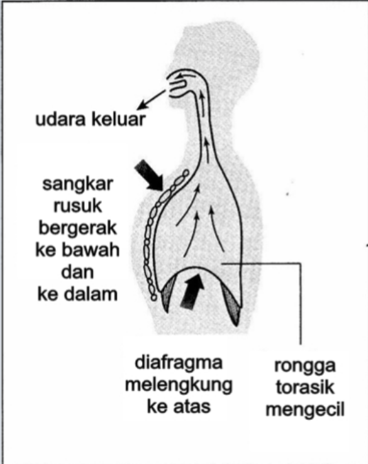
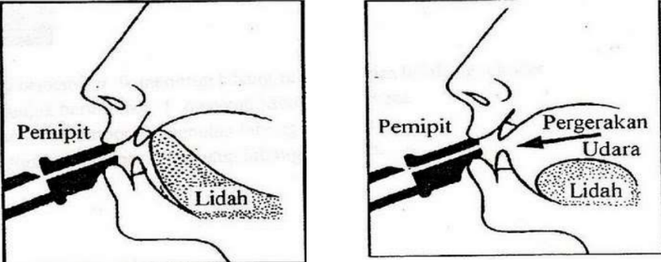

Teknik
Untuk meniup not rendah, tekanan udara dari ruang diafragma dilepaskan perlahan-lahan serta terkawal. Tekanan udara yang lebih serta dilepaskan secara laju adalah untuk meniup not tinggi.
Tiupan haruslah tidak terlalu kuat, kerana rekoder sangat sensitif terhadap tekanan udara.
Bunyi yang bagus dihasilkan melalui aliran udara yang konsisten dan halus, bukan tiup secara kencang.
Teknik
Teknik ini penting bagi memastikan not yang dihasilkan jelas dan terkawal mengikut tempo.
Cara melakukan teknik penglidahan yang betul ialah dengan meletakkan lidah di belakang gigi atas dan seolah-olah menyebut “tu” atau “du”.
Meniup rekoder sambil menggerakkan lidah seperti menyebut:
• “Tu” untuk nada tajam dan terang
• “Du” untuk nada lembut dan legato (teknik bermain di mana nada-nada dimainkan secara bersambung dan halus, tanpa jeda yang jelas antara nada).
Setiap nota yang ditiup perlu dimulakan dengan gerakan lidah ini, bukan sekadar meniup terus tanpa kawalan.
